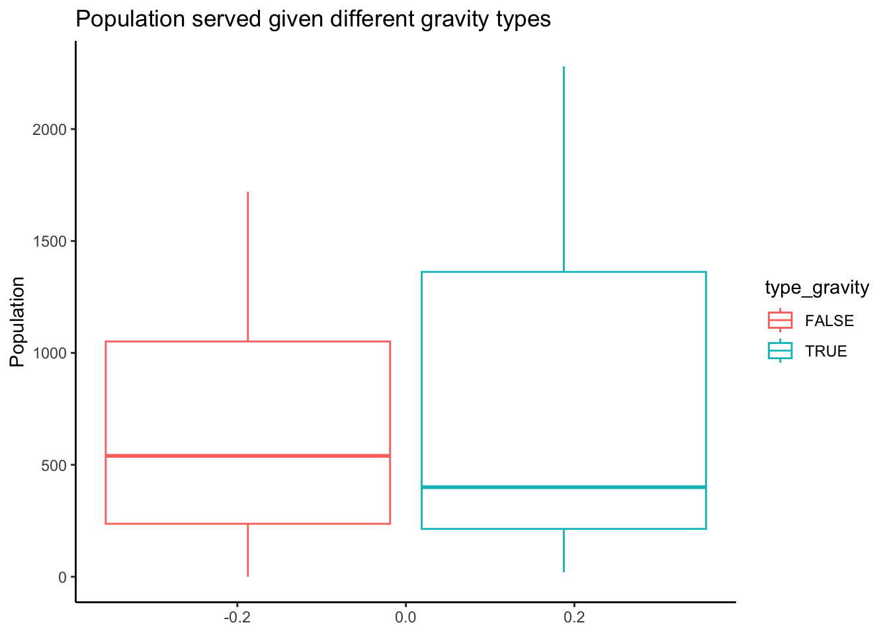

The goal of the package portawaterperu is to provide access to data about community portable water systems in Peru. The data is collected from SIASAR database consisted of information and surveys about water catchments, storage system, treatment, distribution networks and maintainance.
Installation
You can install the development version of portawaterperu from GitHub with:
# install.packages("devtools")
devtools::install_github("openwashdata/portawaterperu")
## Run the following code in console if you don't have the packages
## install.packages(c("dplyr", "knitr", "readr", "stringr", "gt", "kableExtra"))
library(dplyr)
library(knitr)
library(readr)
library(stringr)
library(gt)
library(kableExtra)Alternatively, you can download the individual datasets as a CSV or XLSX file from the table below.
| dataset | CSV | XLSX |
|---|---|---|
| portawaterperu | Download CSV | Download XLSX |
Data
The package provides access to one dataset portawaterperu.
portawaterperu
The dataset portawaterperu contains data abour portable water system from 32 communities in Peru. It has 32 observations and 51 variables
portawaterperu |>
head(3) |>
gt::gt() |>
gt::as_raw_html()| name | ID | div | lat | long | alt | year | community | service_provider | pop_serviced | hh_serviced | type_gravity | type_pump | type_well | type_rain | water_dry_season | water_rain_season | source_id | source_type | source_lat | source_long | source_alt | catch_macromeasure | catch_status | maintenance_date | catch_abcd | cond_abcd | treat_type | treat_abcd | storage_abcd | dist_abcd | flow | flow_unit | chlorine_res | chlorine_res_unit | treatment_ID | treatment_type | treatment_function | treatment_lat | treatment_long | treatment_alt | storage_ID | storage_clean_unit | storage_lat | storage_long | storage_alt | storage_status | dist_ID | dist_hour | dist_connection | dist_status |
|---|---|---|---|---|---|---|---|---|---|---|---|---|---|---|---|---|---|---|---|---|---|---|---|---|---|---|---|---|---|---|---|---|---|---|---|---|---|---|---|---|---|---|---|---|---|---|---|---|---|---|
For an overview of the variable names, see the following table.
| variable_name | variable_type | description |
|---|---|---|
| name | character | Name of the community water system |
| ID | numeric | ID of the water system |
| div | character | Geographical division of the community |
| lat | numeric | Latitude of the community |
| long | numeric | Longitude of the community |
| alt | numeric | Altitude of the community |
| year | numeric | Year of data collection about communities. (Use in caution) |
| community | character | Community name |
| service_provider | character | Service provider (PSE stands for Prestador de servicio) |
| pop_serviced | numeric | Population served |
| hh_serviced | numeric | Household served |
| type_gravity | logical | Is the community served by a gravity water supply system? |
| type_pump | logical | Is the community served by a pumped water supply system? |
| type_well | logical | Is the community served by a well/hand pump water supply system? |
| type_rain | logical | Is the community served by a rainwater harvesting water supply system? |
| water_dry_season | logical | Are there adequate water resources (at the source) to meet demand in dry season? |
| water_rain_season | logical | Are there adequate water resources (at the source) to meet demand in rainy season? |
| source_id | numeric | ID of the water source |
| source_type | factor | Type of the water source, options including (1) lake, (2) river, (3) dug well, and (4) drilled well. |
| source_lat | numeric | Latitude of the water source |
| source_long | numeric | Longitude of the water source |
| source_alt | numeric | Altitude of the water source |
| catch_macromeasure | character | Macro measurement of catchment |
| catch_status | factor | Status of the catchment, options including (1) A: good, (2) B: fair, (3) C: poor, and (4) D: Inoperable. |
| maintenance_date | c(“POSIXct”, “POSIXt”) | Date of the maintainance data collection |
| catch_abcd | factor | Status of catchment at maintainance, options including (1) A: good, (2) B: fair, (3) C: poor, and (4) D: Inoperable. |
| cond_abcd | factor | Status of condition at maintainance, options including (1) A: good, (2) B: fair, (3) C: poor, and (4) D: Inoperable. |
| treat_type | factor | Type of treatment, options including (1) desinfection with chlorine and (2) slow filtration. |
| treat_abcd | factor | Status of treatment at maintainance, options including (1) A: good, (2) B: fair, (3) C: poor, and (4) D: Inoperable. |
| storage_abcd | factor | Status of the storage system at maintainance, options including (1) A: good, (2) B: fair, (3) C: poor, and (4) D: Inoperable. |
| dist_abcd | factor | Status of the distribution network at maintainance, options including (1) A: good, (2) B: fair, (3) C: poor, and (4) D: Inoperable. |
| flow | numeric | Flow rate, check unit with column |
| flow_unit | character | Unit of flow rate |
| chlorine_res | numeric | Chlorine residual |
| chlorine_res_unit | character | Unit of chlorine residual |
| treatment_ID | numeric | ID of the treatment |
| treatment_type | factor | Type of the treatment |
| treatment_function | logical | Is treatment functional? |
| treatment_lat | numeric | Latitude of the water treatment |
| treatment_long | numeric | Longitude of the water treatment |
| treatment_alt | numeric | Altitude of the water treatment |
| storage_ID | numeric | ID of the water storage infrastructure. |
| storage_clean_unit | character | Unit of cleaning frequency of the storage system |
| storage_lat | numeric | Latitude of the water storage infrastructure. |
| storage_long | numeric | Longitude of the water storage infrastructure. |
| storage_alt | numeric | Altitude of the water storage infrastructure. |
| storage_status | factor | Status of the water storage infrastructure, options including (1) A: good, (2) B: fair, (3) C: poor, and (4) D: Inoperable. |
| dist_ID | numeric | ID of the distribution system |
| dist_hour | numeric | Hours of service per day |
| dist_connection | numeric | Number of distribution network connections |
| dist_status | character | Status of the distribution system, options including (1) A: good, (2) B: fair, (3) C: poor, and (4) D: Inoperable. |
Example
library(portawaterperu)
library(ggplot2)
# Provide some example code here
portawaterperu |>
#dplyr::filter(stringr::str_starts(divisiones, "AMAZONAS")) |>
#dplyr::group_by(divisiones) |>
#dplyr::summarise(mean = mean(pob_servida)) |>
ggplot(aes(y = pop_serviced, color = type_gravity))+
geom_boxplot(outliers = F)+
labs(title = "Population served given different gravity types",
y= "Population") +
theme_classic()
Capstone Project
This dataset is shared as part of a capstone project in Data Science for openwashdata. For more information about the project and to explore further insights, please visit the project page at https://ds4owd-001.github.io/project-laurenjudah/ (to be public available)
Methodology
The data was obtained from @SIASAR, an information system containing data on rural water supply and sanitation services. Using SIASAR’s “download data by country” tool, all available data for Peru (10 excel files) were downloaded. After examining the 10 excel files, only 5 pertained to potable water systems. Those 5 data sets were imported into R and subsequently empty values and unnecessary columns were deleted from them. Finally, the 5 data sets were combined into 1 data frame based on community ID. The combined, cleaned data set contains data from 32 communities.
Documentaion of the dataset went through: https://globalsiasar.org/sites/default/files/documents/water_supply_system_v10.pdf
License
Data are available as CC-BY.
Citation
Please cite this package using:
citation("portawaterperu")
#> To cite package 'portawaterperu' in publications use:
#>
#> Judah L, Loos S, Zhong M (2024). _portawaterperu: A Preliminary
#> Review of Peruvian Potable Water System Data_. R package version
#> 0.0.0.9000, <https://github.com/openwashdata/portawaterperu>.
#>
#> A BibTeX entry for LaTeX users is
#>
#> @Manual{,
#> title = {portawaterperu: A Preliminary Review of Peruvian Potable Water System Data},
#> author = {Lauren Judah and Sebastian Camilo Loos and Mian Zhong},
#> year = {2024},
#> note = {R package version 0.0.0.9000},
#> url = {https://github.com/openwashdata/portawaterperu},
#> }